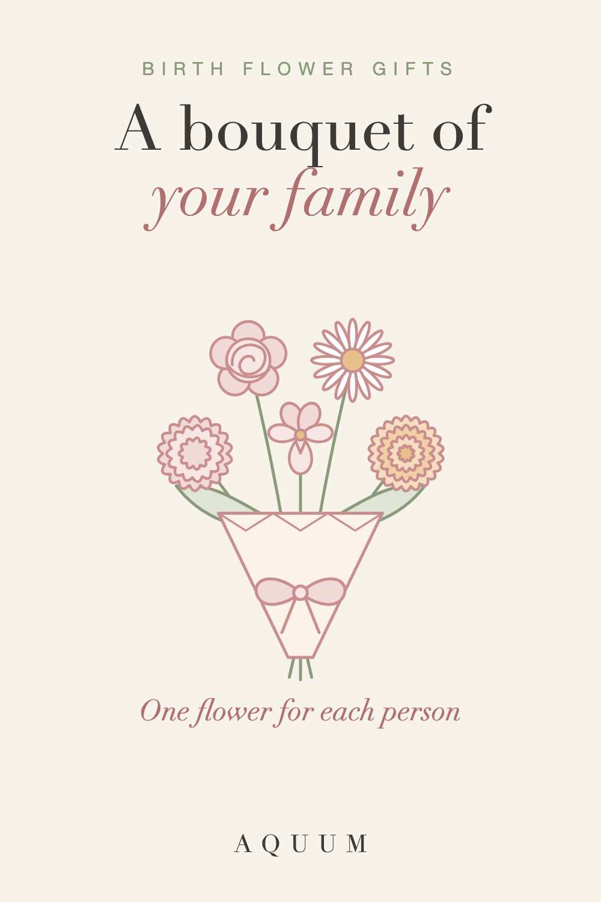

Family Birth Flower Bouquet: Make One With Everyone's Flower
2026-10-01
Written by the team behind Aquum, a small birth flower gift shop. How we make money.

A family birth flower bouquet is a simple idea with a lot of heart: one flower for each person, picked by the month they were born, gathered into one bunch. Mom's carnation next to a daughter's daisy and a grandson's marigold. It works as a framed print, a tattoo, a card, or the design on a gift.
Build your bouquet
Tap a month for each person in the family, up to eight. Tap the same month twice if two people share it, or tick "second flower" to add that month's other flower instead.
Tap a month to add the first flower.
The image is yours to print at home or use as a phone wallpaper. If you're taking it to a tattoo artist, bring it as a reference and let them draw it in their own hand.
How to choose the flowers
- One flower per person, by birth month. That's the whole rule. Not sure of someone's flower? The birth flower finder tells you from a birthday.
- Two people, same month? Use the month's flower twice, or give one of them the month's second birth flower so each stays distinct.
- Include who you like. Partners, children, grandparents, a pet, someone you've lost. Many families add a flower for a loved one who has passed, and it often becomes the most meaningful one in the bunch.
- Keep it to eight or fewer. Past that, the flowers get small. For big families, make one bouquet per branch: grandparents and their children, then each household.
What each flower brings
Every bouquet tells a small story through its meanings. A few examples:
- Carnation (January): love that doesn't give up
- Violet (February): quiet loyalty
- Daisy (April): uncomplicated joy
- Rose (June): love in all its forms
- Marigold (October): warmth that stays
- Chrysanthemum (November): honest friendship
All twelve, with their second flowers, are in birth flowers by month, and the color meanings guide helps if you want to choose a color for each.
Ideas for a family bouquet
- A gift for mom or grandma. Her flower in the middle, her children's or grandchildren's around it. See our gifts for mom and gifts for grandma guides.
- A Mother's Day card. Print the bouquet small and glue it to the front of a folded card. More ideas in our Mother's Day guide.
- A matching tattoo. Siblings or parents and children each get the same bouquet, or each gets their own flower from it. See birth flower tattoo ideas.
- A wedding or anniversary keepsake. The couple's two flowers, then add one for each child as the family grows. Our anniversary guide has more.
- A nursery print. The baby's flower with the parents' and siblings' around it.
Want something ready to print instead? Our free birth flower printables include a chart, gift tags, cards and coloring pages.